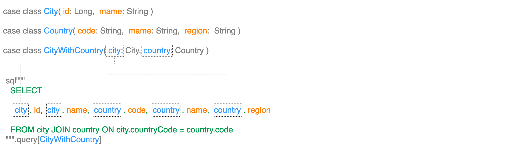

Data Select
This chapter describes how to select data using the ldbc data set.
Loading rows into a collection
For the first query, let's aim for a low-level query, select a few users to list, and print out the first few cases. There are several steps here, so I will note the types along the way.
sql"SELECT name FROM user"
.query[String] // Query[IO, String]
.to[List] // Executor[IO, List[String]]
.readOnly(conn) // IO[List[String]]
.unsafeRunSync() // List[String]
.foreach(println) // UnitLet's break this down a bit.
sql “SELECT name FROM user”.query[String]is a single-column query that definesQuery[IO, String]and maps each row returned to a String. This query is a single-column query that maps each row returned to a String..to[List]is a convenience method that accumulates rows into a list, in this caseExecutor[IO, List[String]]. This method works for all collection types with CanBuildFrom.readOnly(conn)generatesIO[List[String]], which when executed will output a normal ScalaList[String].unsafeRunSync()executes the IO monad and gets the result. This is used to execute the IO monad and get the result.foreach(println)prints out each element of the list.
Multiple column query
Of course, multiple columns can be selected and mapped to tuples.
sql"SELECT name, email FROM user"
.query[(String, String)] // Query[IO, (String, String)]
.to[List] // Executor[IO, List[(String, String)]]
.readOnly(conn) // IO[List[(String, String)]]
.unsafeRunSync() // List[(String, String)]
.foreach(println) // UnitMapping to classes
ldbc also allows you to select multiple columns and map them to classes. This is an example of defining a User class and mapping the query results to the User class.
case class User(id: Long, name: String, email: String)
sql"SELECT id, name, email FROM user"
.query[User] // Query[IO, User]
.to[List] // Executor[IO, List[User]]
.readOnly(conn) // IO[List[User]]
.unsafeRunSync() // List[User]
.foreach(println) // UnitThe fields of the class must match the column names of the query. This means that the fields of the User class are id, name, and email, so the query column names must be id, name, and email.

Let's see how to select data from multiple tables using Join and other methods.
This is an example of defining City, Country, and CityWithCountry classes, respectively, and mapping the results of a query that Joins the city and country tables to the CityWithCountry class.
case class City(id: Long, name: String)
case class Country(code: String, name: String, region: String)
case class CityWithCountry(coty: City, country: Country)
sql"""
SELECT
city.id,
city.name,
country.code,
country.name,
country.region
FROM city
JOIN country ON city.country_code = country.code
"""
.query[CityWithCountry] // Query[IO, CityWithCountry]
.to[List] // Executor[IO, List[CityWithCountry]]
.readOnly(conn) // IO[List[CityWithCountry]]
.unsafeRunSync() // List[CityWithCountry]
.foreach(println) // UnitWe mentioned earlier that the fields of the class must match the column names of the query.
In this case, the fields of the City class are id and name, and the fields of the Country class are code, name, and region, so the query column names are id, name, code, name, and `region means that the query column names are
If you do a Join, each column must be specified with a table name to indicate which table the column is from.
In this example, the columns are specified as city.id, city.name, country.code, country.name, and country.region.
In ldbc, this is how table name. column name to class name. By mapping field names to field names, data from multiple tables can be mapped to nested classes.

In ldbc, when performing a Join to retrieve data from multiple tables, it is possible to map to a class Tuple instead of only a single class.
case class City(id: Long, name: String)
case class Country(code: String, name: String, region: String)
sql"""
SELECT
city.id,
city.name,
country.code,
country.name,
country.region
FROM city
JOIN country ON city.country_code = country.code
"""
.query[(City, Country)]
.to[List]
.readOnly(conn)
.unsafeRunSync()
.foreach(println)In this example, the City and Country classes are mapped to Tuple.
It is important to note that, unlike the previous example, the Table Name. Column Name to Class Name. Field Name`, the table name is the class name.
Therefore, there is a restriction on this mapping: table names and class names must be equivalent. In other words, if you shorten the table name from city to c, etc., using aliases, etc., the class name must also be C.
case class C(id: Long, name: String)
case class CT(code: String, name: String, region: String)
sql"""
SELECT
c.id,
c.name,
ct.code,
ct.name,
ct.region
FROM city AS c
JOIN country AS ct ON c.country_code = ct.code
"""
.query[(City, Country)]
.to[List]
.readOnly(conn)
.unsafeRunSync()
.foreach(println)